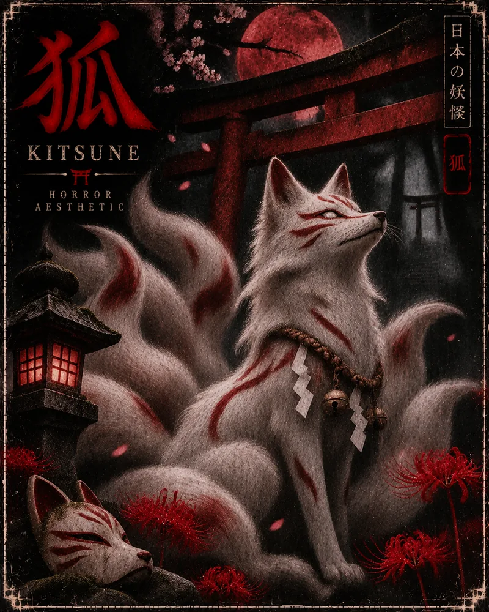
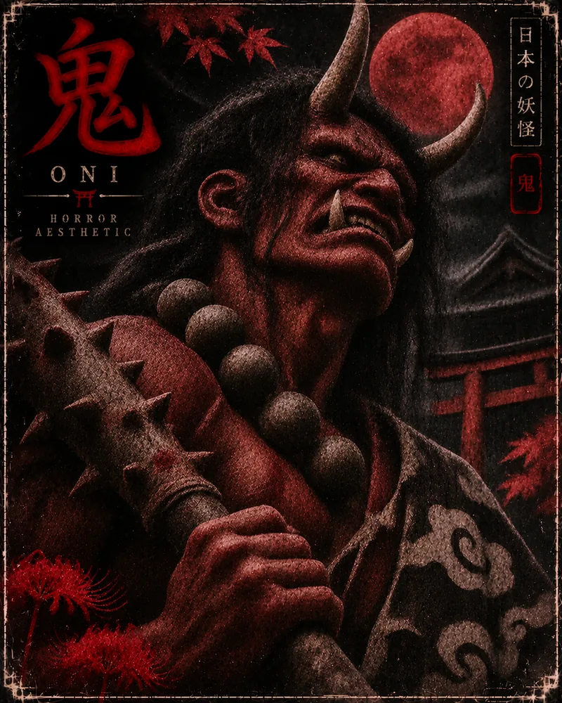
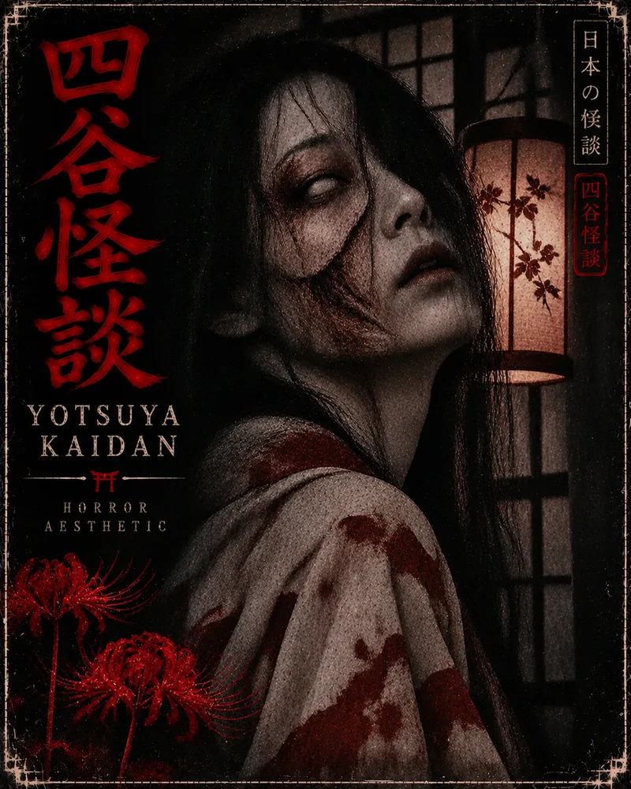
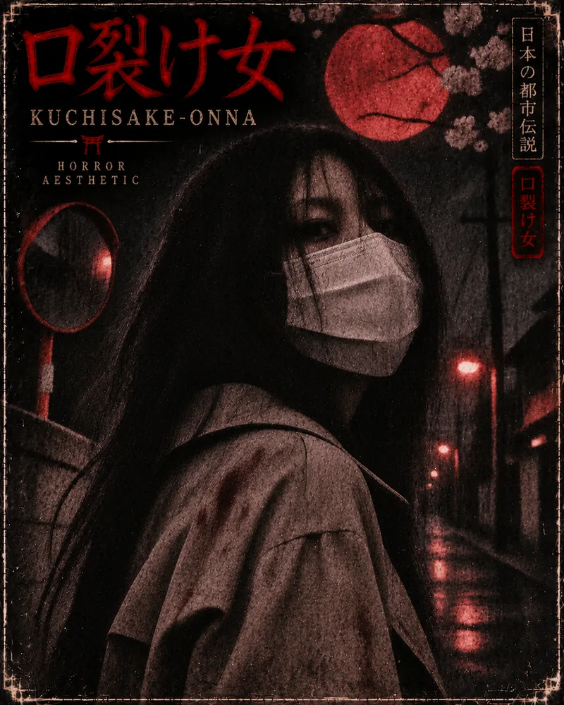
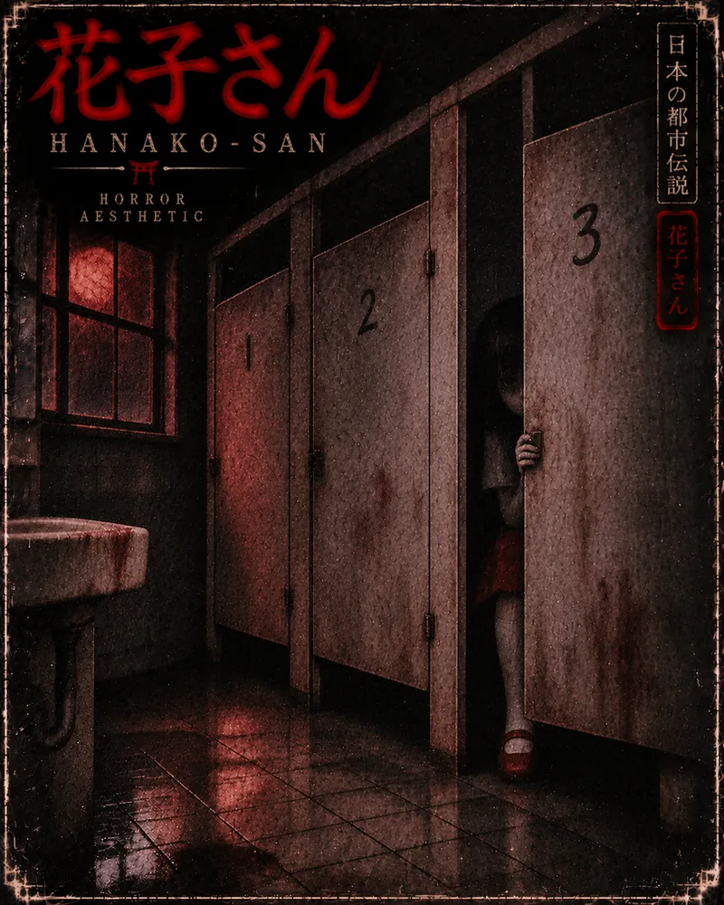

Yuki-onna
Снежная женщина, появляющаяся в метель.
Фольклор, духи, демоны и городские легенды. Исследование существ и историй, в которых коллективная память превращает страх в миф.
Снежная женщина, появляющаяся в метель.

Лиса-оборотень, хранительница тайн и обмана.

Демоны японских легенд и их символика.

История мстительного духа из театральной традиции.

Женщина с разрезанным ртом из городской легенды.

Призрак школьного туалета и современный кайдан.